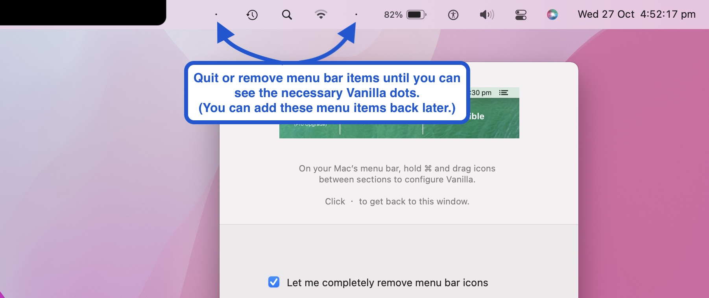
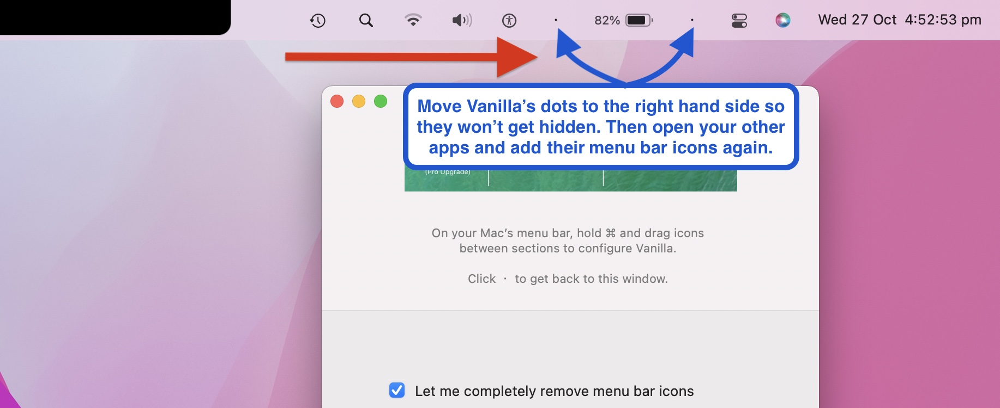

Vanilla is compatible with Macbooks that have notches – the 2021 Macbook Pro 14-inch and 16-inch. This page will help you set up Vanilla if you’re having trouble on a machine with a notch.
If Vanilla is already working OK for you on your new machine, you don’t need to follow this guide - you can just keep using Vanilla.
Make sure you’re using the latest version of Vanilla. You can update via Vanilla’s menu bar dot or by downloading the latest version from our home page.
When you first set up Vanilla, or you toggle the "Let me completely remove menu bar icons" checkbox, you might find that Vanilla's configuration "dots" aren't visible in your menu bar.
This guide will help you fix that and set up Vanilla.
What causes this?
The notch at the top of the display in these new machines reduces the amount of space available to menu bar items.
If you have more menu bar items than will fit in the right-hand side of the notch, macOS hides any icons that overflow this area. You can't see them, access them… or even know that they're there.
(This is just how macOS interacts with the notch – it has nothing to do with Vanilla. I'm hoping Apple will fix this in macOS soon because it’s badly designed.)
You can still set up and use Vanilla on these machines if you have a lot of menu bar items.
We just need to make sure Vanilla's dots are visible and configurable while setting up Vanilla for the first time.
1. Quit Vanilla if it is open (either via the Vanilla dot in the menu bar, or Activity Monitor)
2. Temporarily quit other menu bar apps, or remove some items from your menu bar, so that all your icons fit into the menu bar space on the right-hand side of the notch. You’ll be able to add these back later once Vanilla is configured.
3. Open Vanilla, and open Vanilla's preferences window if it's not already open.
4. If you have "Let me completely remove menu bar icons" checked, make sure you can see two dots in your menu bar.
5. If you do not have "Let me completely remove menu bar icons" checked, make sure you can see one dot in your menu bar.
6. Command-drag Vanilla's dot(s) to the right end of the available space in your menu bar. This is so that we can configure the icon sections later.
7. Restart your other apps and re-add any removed menu bar items. These should appear to the left of the Vanilla dots.
8. Drag Vanilla's dots left and right to configure your hidden/removed sections like you normally would on a notch-less machine.
9. Close Vanilla's preferences window.
10. You should be good to go!
Feel free to contact me any time via email at matt@matthewpalmer.net. Please include device and OS info, screenshots, or a screen recording if you need support.